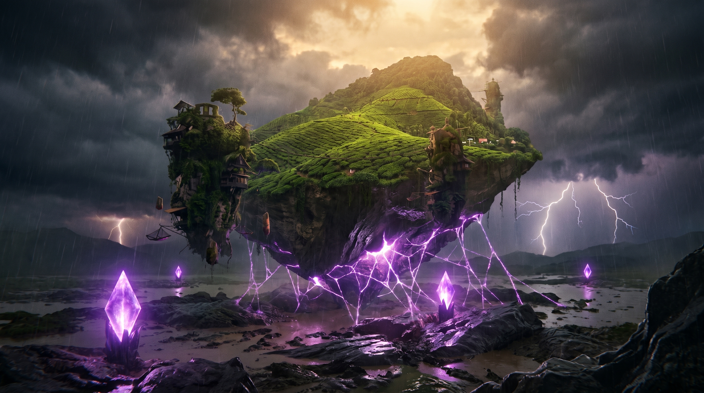

An original sci-fi feature in development for the Future Vision XPRIZE.
When catastrophic floods threaten to drown Northeast India, a resilient community must harness the storm's apocalyptic lightning, powering an untested diamond anti-gravity matrix to tear their homeland from the earth and levitate it to safety.
We are moving away from the dystopian exhaustion of modern sci-fi. The Govardhan Lift is a story of extreme grit and decentralized collaboration. It is not about a lone genius saving the world; it is about thousands of people working shoulder-to-shoulder in the freezing rain to engineer an ark. We are transforming a mass extinction event into the birth of a regenerative, Solarpunk future.
The fantastical elements of our world are strictly anchored in theoretical physics and materials science. We explore planetary-scale atmospheric harvesting, manipulating the global electric circuit via carbon-nanotube tethers, and utilizing macroscopic Quantum Flux Pinning within a massive Lonsdaleite matrix.
Co-Writer, Co-Director & Worldbuilder
Drives the overarching narrative architecture and hard-science lore. Responsible for conceptualizing the physical mechanics of the Solarpunk future and translating complex planetary physics into character-driven storytelling. Manages the project's digital generation workflows, leveraging a background in computer engineering and system architecture to design the complex AI prompt-logic required to build the world.
Co-Writer, Co-Director & Cinematographer
Drives the visual storytelling, framing, and cinematic composition. Responsible for establishing the distinct visual language of the film. Directs dynamic camera movements and lighting cues within the AI-generated environments, overseeing look-development and the final editorial pacing to capture the massive, apocalyptic scale of the cataclysm.